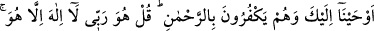
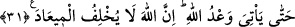

ALLAH DİLESEYDİ
BÜTÜN İNSANLARI
HİDÂYETE ERDİRİRDİ
30. (Ey Muhammed!) Böylece seni, kendilerinden önce nice ümmetlerin gelip
geçtiği bir ümmete gönderdik ki, sana vahyettiğimizi onlara okuyasın. Oysa onlar
Rahman’ı inkâr ediyorlar. De ki: “O benim Rabbimdir. O’ndan başka tanrı yoktur.
Sadece O’na tevekkül ettim ve dönüşüm sadece O’nadır.”
31. Eğer okunan bir Kitapla dağlar yürütülseydi veya onunla yer parçalansaydı,
yahut onunla ölüler konuşturulsaydı (o Kitap yine bu Kur’an olacaktı). Fakat bütün
işler Allah’a aittir. İman edenler hâlâ bilmediler mi ki, Allah dileseydi bütün
insanları hidâyete erdirirdi? Allah’ın vâdi gelinceye kadar inkâr edenlere,
yaptıklarından dolayı ya ansızın büyük bir belâ gelmeye devam edecek veya o belâ
evlerinin yakınına inecek. Allah, vâdinden asla dönmez.
Ey Muhammed! Peygamberleri kendi ümmetlerine gönderdiğimiz gibi “böylece seni,
kendilerinden önce” peygamber gönderilen “nice ümmetlerin gelip geçtiği bir ümmete
gönderdik.” Dolayısıyla senin gönderilişin yeni bir şey değildir. Yani seni ümmetine
göndermemiz, öncesi olmayan bir hâdise değildir.
Sonra gönderilmenin sebebi şöyle ifade ediliyor “ki, sana vahyettiğimizi onlara
okuyasın.” Yani sana vahyettiğimiz yüce kitab olan Kur’ân’ı ve ihtivâ ettiği İslâm’ın
hüküm ve esaslarını onlara okuyasın ve onları îman süsü ile bezeyip süsleyesin. Çünkü
Kur’ân’ın inmesinden maksad, sırf okumak ya da sadece dinlemek değil, içinde
bulunanlarla amel edilmesi ve güzel bir hayat tarzının elde edilmesidir. Bu bakımdan
avamdan olan bir ibâdet ehli yaya olarak yürüyen kimse gibidir. Gevşek bir âlim ise
binitinin üstünde uyuyan kimse gibidir.
Sa‘dî der ki: